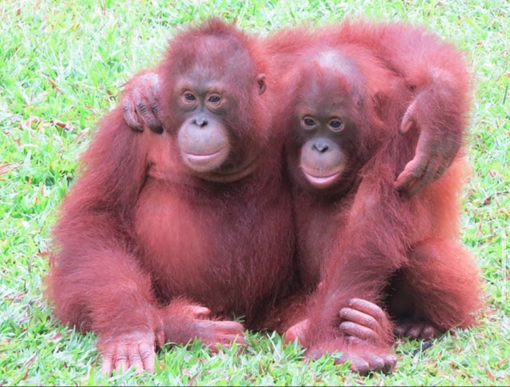
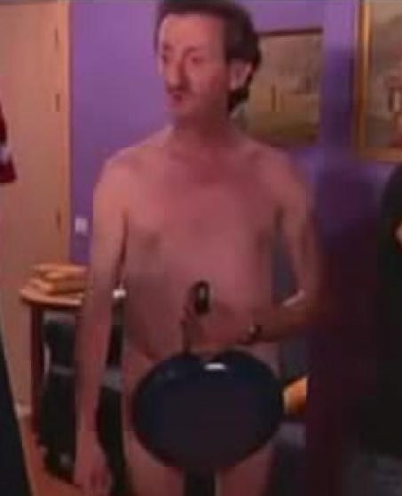

Titulo pricipal
Titulo secundario
Parrafo
- Bos Gaurus
- El gaur (Bos gaurus), también llamado seladang o bisonte de la India, es un bovino salvaje distribuido por la India, Nepal e Indochina.
- Bos javanicus
- El banteng (Bos javanicus) es una especie de bóvido salvaje del sudeste asiático. Es una de las especies salvajes de bóvidos más grandes del mundo, superado solo por el gaur.
Y entonces dijo:
¡Ups!
for i in range(10):
x += 1


lista de enlaces